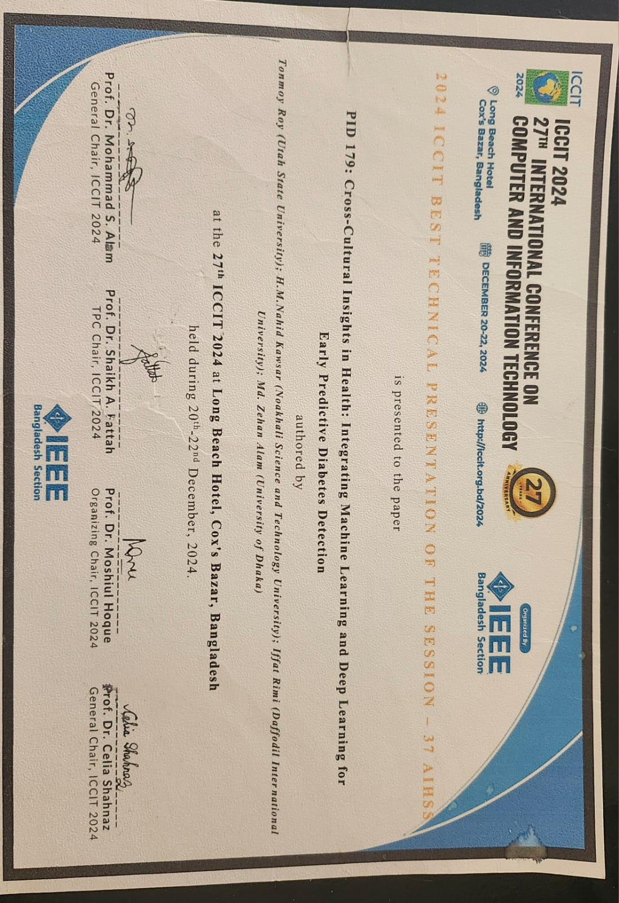
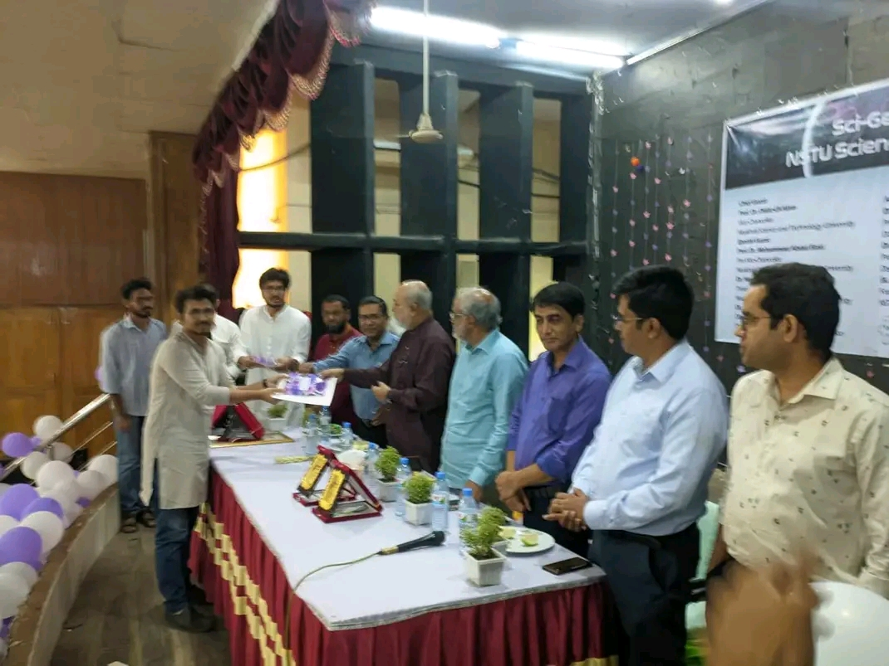
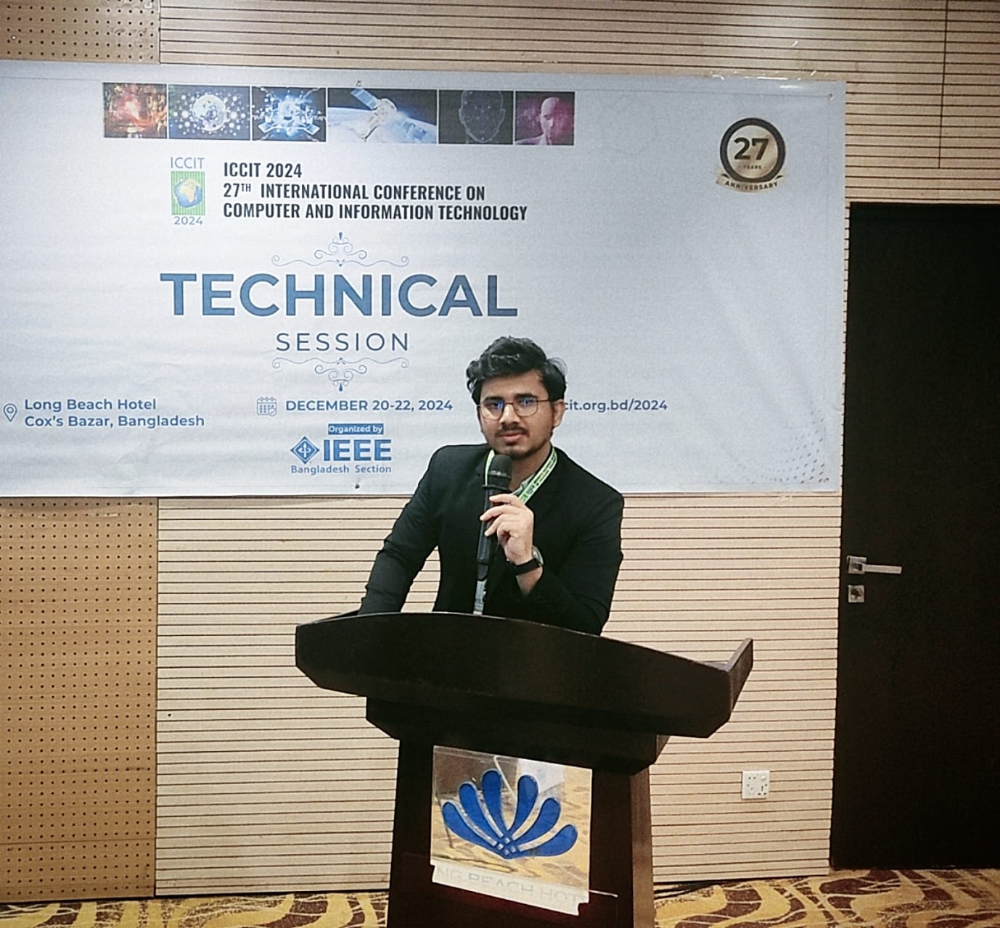
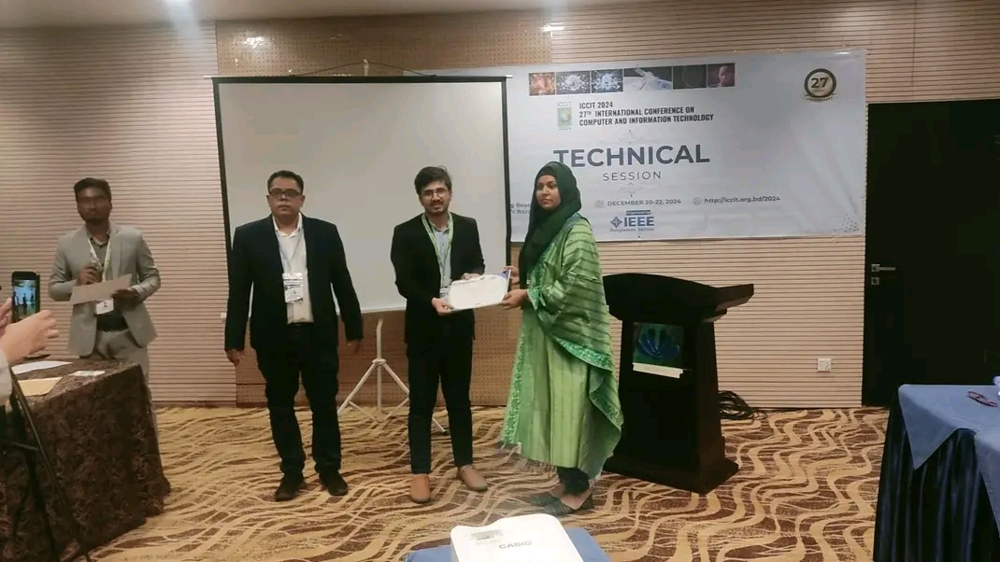
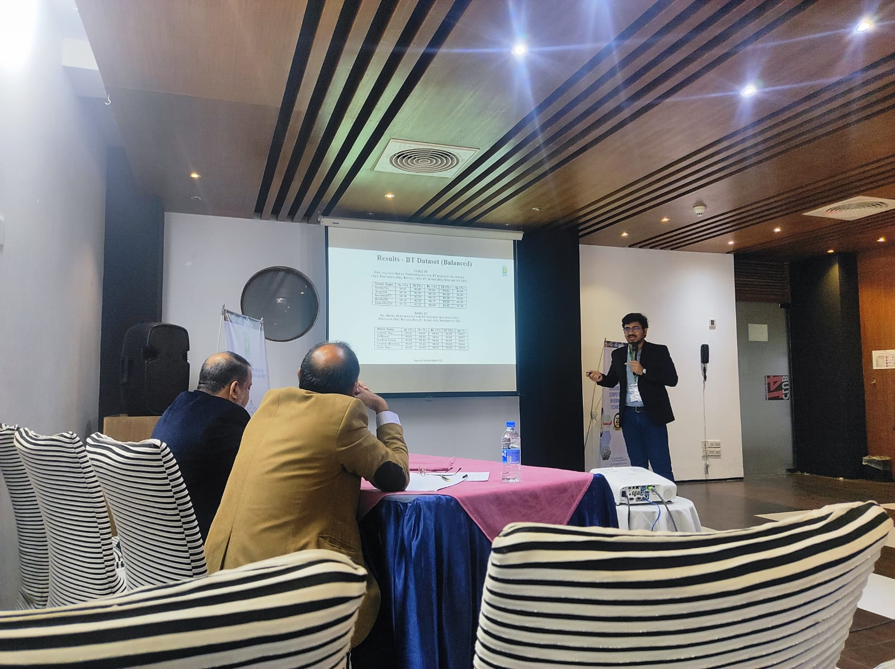
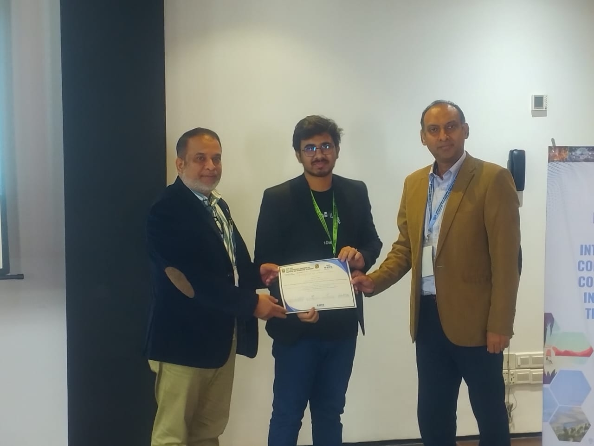

Activities & Leadership
Presentations, awards, roles, and impact across university clubs and international conferences.
IEEE ICCIT 2024 — Conference Presentations
📅 27th International Conference on Computer and Information Technology
📍 Cox's Bazar, Bangladesh — December 20-22, 2024
🏆 Received Best Technical Presenter Award at the conference
Enhancing Transfer Learning for Medical Image Classification with SMOTE — Live Presentation
Presenting my paper on using SMOTE to address class imbalance in medical image classification. While alternative methods like ADASYN, Borderline-SMOTE, and GANs exist, they require powerful GPUs and significant training time. This study demonstrates that applying SMOTE on class probabilities extracted from pre-trained CNN models improves accuracy by 1.97%, recall/sensitivity by 5.43%, and specificity by 0.72% — all with minimal extra computation. The Voting Classifier combined with SMOTE achieved 92.14% accuracy on the imbalanced APTOS 2019 diabetic retinopathy dataset.
Conference Tour — IEEE ICCIT 2024 Venue Walkthrough
A complete tour of the IEEE ICCIT 2024 conference venue in Cox's Bazar — exploring different presentation rooms, the keynote hall where distinguished speakers delivered invited talks, and the virtual presentation corridor where remote participants joined online with their laptops and setups. The video captures the conference atmosphere, networking spaces, and behind-the-scenes infrastructure that made the event successful.
Major Awards
Best Technical Presenter
IEEE ICCIT 2024
December 2024
Awarded as Best Technical Presenter of the session for presenting the paper "Cross-Cultural Insights in Health: Integrating Machine Learning and Deep Learning for Early Predictive Diabetes Detection" at the 27th IEEE International Conference on Computer and Information Technology, Cox's Bazar, Bangladesh.

Runner-up Prize
NSTU Math Olympiad
March 2023
Achieved second position (Runner-up) in the Math Olympiad organized by NSTU Math Club. Received the prize from a faculty member in the presence of all department faculty members.

Scientific Article Writing Merit Award
Science Club, NSTU
December 2023
"Light: A Distinguished Phenomenon in the Universe" — An article exploring how light reveals cosmic mysteries through spectroscopy, redshift, and gravitational lensing — inspired by the James Webb Space Telescope's first images released by NASA on July 12, 2022.

Activities & Events
🎤 IEEE ICCIT 2024 — Best Technical Presenter
A gallery of important moments captured in photos — presenting my first paper "Cross-Cultural Insights in Health: Integrating Machine Learning and Deep Learning for Early Predictive Diabetes Detection" at IEEE ICCIT 2024, receiving the presentation certificate, presenting my second paper "Enhancing Transfer Learning for Medical Image Classification with SMOTE: A Comparative Study," and receiving the second presentation certificate. These moments document the journey from preparation to recognition at the conference.

📷ieee-iccit-paper1-presenting.jpg

🏅ieee-iccit-paper1-certificate.jpg

📷ieee-iccit-paper2-presenting.jpg

🏅ieee-iccit-paper2-certificate.jpg